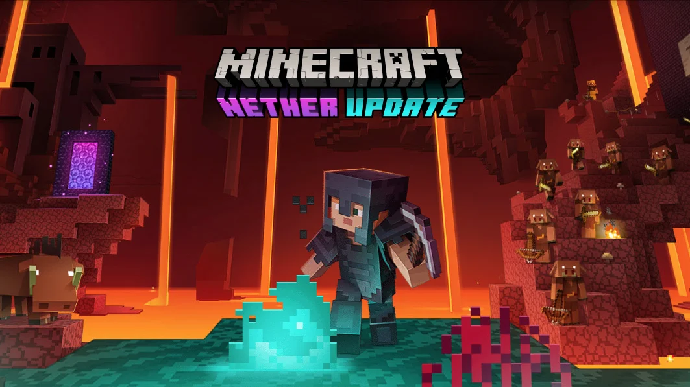
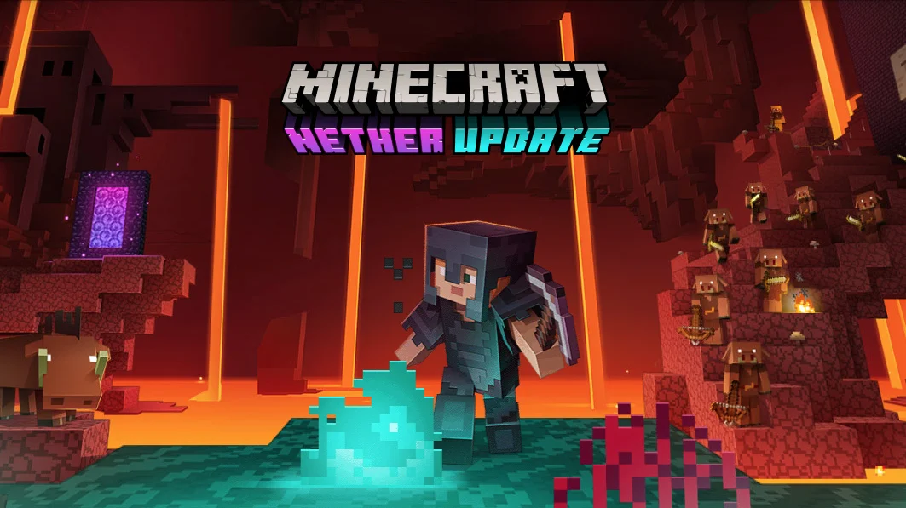

Basic profile information:
My name is Alex Fox, and I am a senior at Saint John's University.
I major in computer science with a specialization in cybersecurity.

Education summary:
Currently pursuing a Bachelor's degree. Earned a high school diploma in 2019.
Work Experience/Internships:
- Busser at restaurant "The Cuban"
- Assistant at Saint Mary's Children's Hospital
- No internships available at the moment.
Programming Skills:
Here is a short list of programming languages I know:
- Java: Experienced. I have taught a bit of Java from my experience within my classes at Saint John's University.
- HTML: Learning currently during my current semester.

General Interests:
I enjoy playing video games with friends, writing stories, bowling, and playing golf on Discord. I also love watching cats do funny things
 

Favorite Song, Film, and TV Show:
Favorite song: "Ransom" by Lil Tecca
Favorite movie: "The Lego Movie"
Favorite TV show: "Generator Rex"
Favorite Cat videos: "Yoshi being silly"
Favorite Website:
My favorite website is the Useless Website. It takes you to random, quirky websites with a single click.

My Projects in this Course
Here is a short list of the projects I have completed in my web design course:
- Project 1: Create a Cover Page
- Project 1(part2): Create a Cover Page2
- Project 1(part3): Create a Cover Page3